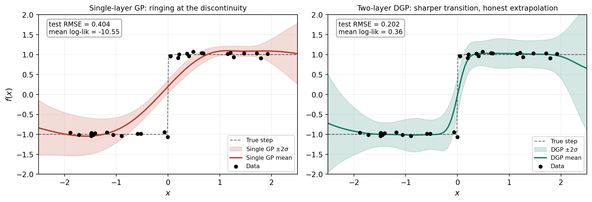
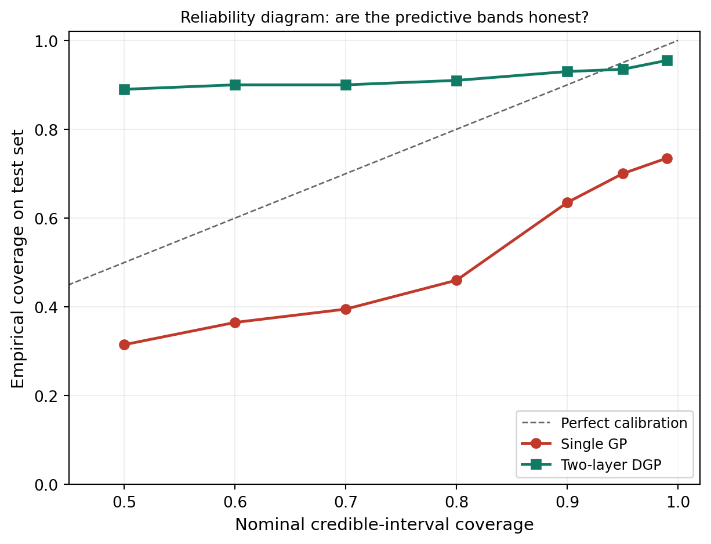
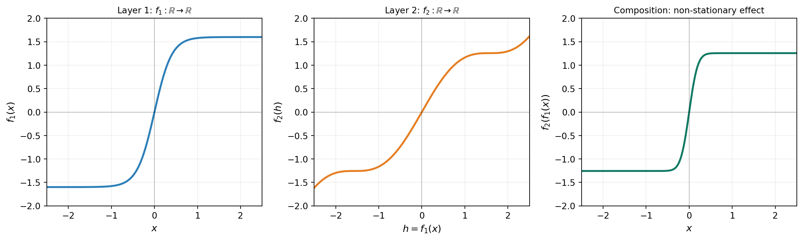
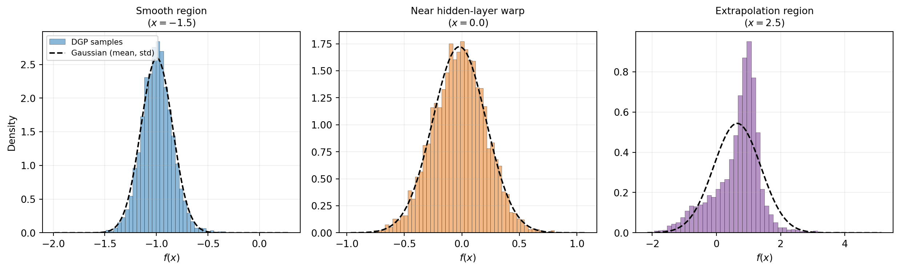
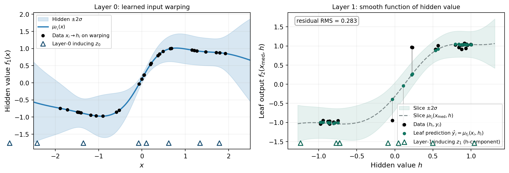

Deep Gaussian Processes
PyApprox Tutorial Library
Composing GPs into hierarchical models that learn input-dependent length scales, capture sharp features, and produce non-Gaussian predictive distributions while preserving principled uncertainty.
TipDownload Notebook
Learning Objectives
After completing this tutorial, you will be able to:
- Explain what a Deep Gaussian Process (DGP) is and how composing GP layers produces non-stationary behavior from stationary ingredients
- Identify situations where a single-layer GP is fundamentally limited and a DGP is appropriate
- Recognize that the DGP predictive distribution is generally not Gaussian, even with a Gaussian likelihood
- Describe the role of inducing points at every layer in making DGP inference tractable
- Anticipate the inference and identifiability challenges that motivate the doubly-stochastic variational framework treated in later tutorials
Prerequisites
Complete Sparse Variational Gaussian Processes before this tutorial. The DGP construction reuses the SVGP machinery — inducing points, the variational posterior \(q(\mathbf{u})\), the ELBO — at every layer of the deep model.
Why Compose GPs?
The Gaussian process from earlier tutorials uses a stationary kernel: the covariance between two function values \(f(\mathbf{x})\) and \(f(\mathbf{x}')\) depends only on the displacement \(\mathbf{x} - \mathbf{x}'\), not on the absolute locations. This gives a single GP its characteristic behavior: one length scale that applies everywhere, and uncertainty bands that close down near data and open up away from it.
Stationarity is reasonable for many engineering responses, but it fails on a surprising number of problems. Two diagnostic situations:
- Discontinuities or sharp transitions. A stationary GP cannot resolve a step without ringing — the same length scale that needs to be short at the discontinuity makes the GP overfit smooth regions on either side.
- Non-uniform smoothness. A response that is rough in one region and smooth in another (shock fronts in CFD, phase transitions, regime-switching dynamics) cannot be well-represented by any single length scale.
The figure below illustrates the first failure mode and contrasts it with what a two-layer DGP produces on the same data.
The fix is not to invent a more elaborate stationary kernel. It is to make the kernel itself input-dependent by composing GPs.
How Good Is the Approximation?
The figures so far make a visual case for the DGP, but visual impressions are easy to mislead. Two quantitative checks anchor what we see.
First, point-prediction accuracy: the small annotation boxes on each panel of the comparison figure above show test-set RMSE and mean log-likelihood on a held-out set of 200 inputs sampled from the same step function. The DGP’s RMSE is roughly half the single GP’s. The mean log-likelihood gap is much larger, and the difference is informative: log-likelihood rewards a model that gets both the mean and the uncertainty right. The single GP’s log-likelihood is strongly negative because its bands are too narrow at the discontinuity, so the truth falls outside the predictive distribution and contributes a large penalty. The DGP’s log-likelihood is positive because its wider, more honest bands assign reasonable density to the true values.
Second, calibration of predictive intervals: even a model with low RMSE can produce dishonest uncertainty bands. To check this we ask, at each nominal credible-interval level (say 90%), what fraction of held-out points actually fall inside the predicted band? A perfectly calibrated model gives empirical coverage equal to the nominal level. A model whose curve sits below the diagonal is overconfident — its bands are too narrow. A model above the diagonal is underconfident — bands too wide.

Neither model sits exactly on the diagonal, but their failure modes are different. The single GP is overconfident: it claims sharp uncertainty bands that don’t actually contain the truth at the discontinuity. The DGP is underconfident: it claims wider bands than it strictly needs, but the bands do contain the truth. The two have very different consequences for downstream use. An overconfident model gives you false certainty about wrong predictions — a quietly dangerous failure. An underconfident model gives you honest predictions with conservative uncertainty bounds — less efficient but safer.
This trade is a real one. The DGP’s wider bands are not a free lunch: in regions where the data is dense and the function is locally simple, the DGP could in principle produce sharper bands. The chained Adam → L-BFGS-B optimizer with \(M=8\) inducing points per layer on \(N=30\) training points has not pinned the variational posterior down tightly enough to be sharper. More inducing points, more iterations, or more training data would all narrow the gap. For a tutorial-scale fit on a difficult step-function problem, the DGP’s behavior is exactly what calibrated probabilistic regression should look like: don’t overstate certainty.
The Construction
A two-layer Deep Gaussian Process stacks two GPs:
\[ f_1 \sim \mathcal{GP}\!\bigl(0,\, k_1(\mathbf{x}, \mathbf{x}')\bigr), \qquad f_2 \sim \mathcal{GP}\!\bigl(0,\, k_2(\mathbf{h}, \mathbf{h}')\bigr). \]
The output of the first GP becomes the input of the second:
\[ y = f_2\!\bigl(f_1(\mathbf{x})\bigr) + \varepsilon, \qquad \varepsilon \sim \mathcal{N}(0,\sigma^2). \]
Each kernel is stationary in its own input space, but the composition is not stationary in \(\mathbf{x}\). The first layer learns a warping of the input; the second layer is a smooth function on the warped space. Together they produce input-dependent effective length scales without ever calling on a non-stationary kernel.
Figure 3 decomposes this composition for a concrete example with \(f_1(x) = 1.6\tanh(2.5x)\) (a smooth sigmoid) and \(f_2(h) = 0.8h + 0.4\sin(2h)\) (a smooth, mildly wavy near-linear function). A smooth \(f_1\) (left) maps the input to a warped hidden space. A smooth \(f_2\) (middle) is defined on that hidden space. The composition \(f_2 \circ f_1\) (right) is sharp where \(f_1\) is steep and gentle where \(f_1\) is flat — even though both ingredients individually are smooth. This is the mechanism behind the DGP’s behavior in Figure 1: layer 0 finds a steep warping near the discontinuity, and the composition with the leaf produces the sharp transition without any non-stationary kernel.

The same construction extends to \(L\) layers:
\[ f_L \circ f_{L-1} \circ \cdots \circ f_1, \qquad f_\ell \sim \mathcal{GP}\!\bigl(0,\, k_\ell\bigr) \text{ for } \ell = 1, \dots, L. \]
In practice \(L=2\) or \(L=3\) already captures most of the additional flexibility, and going deeper introduces inference difficulties that outweigh the gains for most surrogate-modeling applications.
A Practical Refinement: Skip Connections
The pure-composition construction has a known pathology: if any intermediate layer learns the identity (\(f_\ell(\mathbf{h}) \approx \mathbf{h}\)), the model behaves like a shallower DGP. Worse, the optimizer can land at solutions where deeper layers have less representational capacity than a single GP because the composition has degenerated.
Modern DGPs avoid this by passing the original input forward to every layer:
$ = f!([,, _{}]). $
Each hidden layer sees the original \(\mathbf{x}\) concatenated with its parent’s output. This skip connection preserves the input information regardless of what the hidden layers do, and it makes the reduction to a single GP a clean special case rather than a degenerate basin in parameter space. PyApprox’s build_single_fidelity_dgp uses skip connections by default. The pure-composition version above is the cleanest framing for what a DGP is; skip connections are the framing that makes it trainable.
Inference: Inducing Points at Every Layer
The single-layer SVGP from the previous tutorial introduced inducing points \(\mathbf{Z}\) as a compressed summary of the GP at \(M \ll N\) chosen locations, with a variational distribution \(q(\mathbf{u}) = \mathcal{N}(\mathbf{m}, S)\) over the function values at those locations. The ELBO bounded the log marginal likelihood from below and was tractable to optimize.
A DGP with \(L\) layers needs all of this, \(L\) times over. Each layer \(\ell\) has its own:
- inducing locations \(\mathbf{Z}_\ell\) in the input space appropriate for that layer,
- variational distribution \(q(\mathbf{u}_\ell) = \mathcal{N}(\mathbf{m}_\ell, S_\ell)\),
- kernel hyperparameters \(\boldsymbol\theta_\ell\).
The deep ELBO has the same shape as the SVGP ELBO: a data-fit term minus a sum of KL divergences, one per layer:
\[ \text{ELBO} \;=\; \sum_{i=1}^{N} \mathbb{E}_{q(f_L(\mathbf{x}_i))}\!\bigl[\log p(y_i \mid f_L(\mathbf{x}_i))\bigr] \;-\; \sum_{\ell=1}^{L} \mathrm{KL}\!\bigl[q(\mathbf{u}_\ell) \,\big\|\, p(\mathbf{u}_\ell)\bigr]. \]
The KL terms have closed-form Gaussian-Gaussian expressions. The data-fit term is the one that gets harder: \(f_L(\mathbf{x}_i)\) is the leaf-layer value, but the leaf layer’s input is the previous layer’s output, which is itself a random function of \(\mathbf{x}_i\). The expectation marginalizes over the joint posterior of all hidden layers, which is no longer Gaussian.
This is where the doubly-stochastic machinery comes in: one source of stochasticity is the variational distribution \(q(\mathbf{u}_\ell)\) at each layer, the second is the propagation of samples between layers. Practical DGP fitting marginalizes \(\mathbf{u}_\ell\) analytically inside each layer, then propagates Monte Carlo (or Gauss–Hermite, or quasi-Monte-Carlo) samples through the chain to estimate the data-fit term.
For now the practical takeaway is this: fitting a DGP is structurally like fitting \(L\) SVGPs simultaneously, with samples from each layer feeding the next. The cost per gradient step is roughly \(L\) times the cost of a single SVGP step. Convergence is harder than for a single SVGP because the joint loss is non-convex.
What the Predictive Distribution Looks Like
The single-layer SVGP gives a Gaussian predictive distribution at every test point. The DGP does not. Even with a Gaussian likelihood and Gaussian variational distributions at every layer, the predictive distribution at a new \(\mathbf{x}^*\) is:
\[ q(f_L(\mathbf{x}^*)) \;=\; \int\! q\bigl(f_L \mid f_{L-1}\bigr)\, q\bigl(f_{L-1} \mid f_{L-2}\bigr) \,\cdots\, q\bigl(f_1 \mid \mathbf{x}^*\bigr) \, df_{L-1} \cdots df_1. \]
Each conditional \(q(f_\ell \mid f_{\ell-1})\) is Gaussian, but the marginal of \(f_L(\mathbf{x}^*)\) — averaging over all the intermediate randomness — is a mixture and need not be Gaussian. In regions where the layer-1 warping is steep, the marginal can be markedly skewed or heavy-tailed.
The figure below makes this concrete. The same fitted DGP is queried at three test locations chosen to land in qualitatively different regions: one in a smooth region away from the warping, one inside the transition region near \(x = 0\), and one in extrapolation territory. At each location the histogram of predictive samples is overlaid with the Gaussian whose mean and standard deviation match the samples. In the smooth region and inside the transition the histograms are well-approximated by a Gaussian — a 2-layer DGP fitted to this data has not produced much non-Gaussianity at training inputs. In extrapolation, however, the histogram is strongly skewed: a tall sharp peak near \(f(x) = 1\) with a long tail reaching down toward \(-1\), completely unlike the matched Gaussian. The non-Gaussian regime is where the DGP’s predictive flexibility shows up most clearly.

The extrapolation regime is where the DGP’s non-Gaussianity matters most in practice. When the model is asked to predict outside the training data, it is also asked to propagate its uncertainty about the warping forward through the chain. That propagation mixes a wide hidden-layer posterior through a non-trivial leaf, producing the kind of skewed predictive seen on the right. Collapsing this to mean and standard deviation throws away the structure that makes the prediction informative — you would conclude “the model is uncertain about everything between \(-1\) and \(+1\)” when in fact the model has put most of its predictive mass on a specific narrow band near \(+1\), with a long lower tail accounting for the chance that the warping had a different shape.
In code, this means you should not collapse a DGP’s predictive distribution to its mean and standard deviation when reporting uncertainty in extrapolation regions. Use the full predictive samples for downstream tasks like uncertainty propagation, calibration analysis, or risk-aware decision making.
Inspecting What the DGP Learned
A fitted DGP is partially interpretable. The first layer’s posterior mean \(\mu_{f_1}(\mathbf{x})\) is itself a function of the original input — it is the warping that the data found useful. The leaf layer’s posterior mean \(\mu_{f_2}(\mathbf{h})\) is a smooth function of the hidden value. Plotting them separately reveals the structure the DGP discovered.
Note that the left panel of Figure 5 does not show the same quantity as Figure 1. Figure 1’s vertical axis is \(f(x)\), the model’s prediction of the observed \(y\). The left panel below has \(f_1(x)\) on its vertical axis — the hidden value the warping assigns to each input. The black dots are the same training inputs \(x_i\) from Figure 1, but they are plotted at their fitted hidden values \(h_i = \mu_{f_1}(x_i)\), not at their observed \(y_i\).
A helpful way to read the right panel of the figure below: the deep model has effectively rewritten the training set. The original observations are pairs \((x_i, y_i)\); the leaf layer is performing GP regression not on those, but on the rewritten pairs \((h_i, y_i)\), where \(h_i = \mu_{f_1}(x_i)\) is the hidden value the warping assigned to training input \(x_i\). The black dots in the right panel show this rewritten dataset, and the green dots show the leaf’s per-point predictions \(\hat y_i = \mu_{f_2}(x_i, h_i)\) at each training input. The thin grey segments connecting black-to-green dots are the residuals, and the annotated RMS gives a single number for fit quality. A good fit shows short segments and a small residual RMS; long segments would indicate the leaf is failing to track the rewritten data — a sign that either the noise term has been inflated to absorb structure or the warping is too crude.
The dashed grey curve is the leaf’s \(\mu_{f_2}(x_{\mathrm{med}}, h)\) slice at the median training input. The slice is useful for visualizing what the leaf looks like as a function of \(h\) alone, but it is the per-point overlay (green dots + residual segments) that actually measures fit quality, because the leaf’s true predictions depend on both \(\mathbf{x}\) and \(h\) through the skip connection.

This decomposition is genuinely useful in practice, but reading it requires honesty about what we see. The warping is non-monotonic: layer 0’s posterior mean rises sharply through the transition near \(x = 0\), peaks around \(x = 0.7\), and bends back downward in the right tail. That dip is not a bug; it is a feature of the DGP’s loss landscape. The skip connection means the leaf layer’s input is \([\mathbf{x}, h]\), so the leaf can use \(\mathbf{x}\) directly to disambiguate two inputs that share similar \(h\) values. This is the disambiguation in action: training points near \(x \approx 0.7\) and near \(x \approx 2\) both get mapped to \(h \approx 1\) by the warping; the leaf separates them using their \(\mathbf{x}\)-component. This makes the warping non-identifiable: many different layer-0 warpings produce the same predictive distribution at the leaf, because the leaf compensates for whatever shape the warping happens to have. The optimizer found one such warping; a different initialization would likely produce a different but loss-equivalent shape.
The residual RMS in the right panel — around 0.28 — is substantially larger than the 0.05 noise the data was generated with. The visible long grey segments tell the same story: with \(M = 8\) inducing points per layer and \(N = 30\) training points, the fitter has chosen a conservative variational posterior that does not pin the leaf down. The diagnostic value of this panel is precisely that we can see this is happening; without the per-point prediction overlay we would only see the dashed slice curve passing through the dot clusters and might conclude the fit is fine. More inducing points, more iterations, or more training data would reduce the residuals at the cost of compute.
The triangles at the bottom of each panel mark each layer’s inducing locations. Layer 0’s inducing points are spread across the input range \(\mathbf{x}\). Layer 1’s inducing locations live in the augmented input space \([\mathbf{x}, h]\); the markers project them onto the hidden axis \(h\) and show that the leaf layer has concentrated its inducing points around the hidden values it actually receives during training, not the wider prior range. This adaptive placement is what the fitter is doing for you while it optimizes the kernel hyperparameters.
A note on identifiability: the parameters of a DGP are not uniquely identified by the data. Many different combinations of \((f_1, f_2)\) can produce the same composition \(f_2 \circ f_1\) — the non-monotonic warping above is a concrete example of this. The predictive distribution at the leaf is identified, but the individual layers are only identified up to such re-parameterizations. The plot above shows one valid decomposition, not the unique one. Tutorials that show a tidy monotonic warping are showing a fit that happened to land in a tidy basin; in general one should expect the warping to be one of many loss-equivalent shapes.
When to Use a DGP
A DGP is the right tool when:
- The function has non-uniform smoothness: rough in some regions, smooth in others.
- The function has discontinuities or sharp transitions that a stationary kernel cannot capture without ringing.
- You have enough data for the deep model to find a non-trivial decomposition. Roughly: a 2-layer DGP needs at least a few dozen training points before it outperforms a single SVGP on smooth problems.
- You have multi-fidelity data that is naturally hierarchical: low-fidelity observations feeding into a higher-fidelity model. Multi-fidelity DGPs are the subject of the multi-fidelity DGP tutorial.
A DGP is not the right tool when:
- The function is genuinely smooth and stationary. A single SVGP will fit it as well or better, with simpler optimization and Gaussian predictives.
- You have very few training points. Deep models are harder to identify with sparse data; a single GP with carefully chosen kernel hyperparameters often wins.
- You need closed-form Gaussian predictives downstream. The DGP’s non-Gaussian predictive is more flexible but breaks any code that assumes Gaussianity.
Summary
A Deep Gaussian Process composes \(L\) SVGPs. Each layer is stationary in its own input space, but the composition learns input-dependent length scales without a non-stationary kernel. Inducing points at every layer keep inference tractable. The variational lower bound has the same shape as for SVGP — a data-fit term minus per-layer KL divergences — but the data-fit term must be estimated by propagating samples through the chain because the joint hidden-layer distribution is non-Gaussian.
Three practical lessons from the figures in this tutorial:
- The DGP is more accurate and better calibrated than a single GP on non-stationary problems — but at tutorial scales (\(N=30\), \(M=8\)) the improvement is moderate, not dramatic. The DGP’s main calibration advantage is that it errs on the side of underconfidence rather than overconfidence.
- The predictive distribution is generally non-Gaussian, especially in extrapolation, even with a Gaussian likelihood. Reporting only mean and standard deviation throws away the structure that makes the prediction informative; use the full predictive samples for downstream tasks.
- The fitted layers are non-identifiable. Many different warpings produce the same predictive distribution because the skip connection lets the leaf layer compensate for any warping shape. A fitted warping is one of many loss-equivalent decompositions, not a unique recovery of underlying structure.
The next tutorial in this sequence applies the chain DGP to multi-fidelity modeling: Multi-fidelity Modeling with Deep Gaussian Processes.
References
- Damianou, A. & Lawrence, N. (2013). Deep Gaussian Processes. AISTATS. The original DGP paper.
- Salimbeni, H. & Deisenroth, M. (2017). Doubly Stochastic Variational Inference for Deep Gaussian Processes. NeurIPS. The standard reference for modern DGP training; introduces the skip-connection convention used in PyApprox.
- Cutajar, K., Pullin, M., Damianou, A., Lawrence, N., & González, J. (2019). Deep Gaussian Processes for Multi-fidelity Modeling. arXiv:1903.07320. Multi-fidelity DGPs and their AR1 reduction — the basis for the multi-fidelity DGP tutorial.